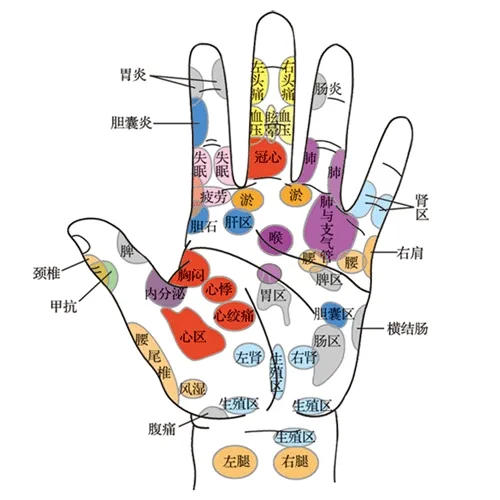

|
经络养生是非常好的保养方法。人体里面虽然看不到经络，但就像电线藏在里面，每一个开关就是穴位，什么病按哪个穴位就立马见效。 中医看脸就知道哪里有病，看手掌就等于看脸，手是五脏六腑的反射区。手指是管头的，就是管脑袋的问题。手背如果青筋突起来又扭曲的基本上有腰痛、有腰肌劳损，青筋越突腰就越痛，是反映背部的问题。 穴位就是一个开关，捏穴位很有技巧，穴位都在阴阳交替线的空隙地带，所以不要捏上下，要捏两边，这样才能掐到这个穴位。按摩手指对心、肝、肾、肠胃、脾、肺是最好的锻炼和保养。 根据经络穴位的特点，有一套很简单的操，从小指拧螺丝一样一直到指甲再出点力，关键是在拧手指的过程中发现哪个部位特别痛（就是不通），必须让痛点立马消失。如果小指痛可能是肾的保养有问题，也可能是颈椎病。如果无名指就要注意内分泌和肝胆方面的问题了。左边头痛（拧）左边手指，右边头痛（拧）右边手指，只要痛点消失头就不痛了。还可以双手手指相插，大力一点可能痛点就没有了，再大力一点可能就发热了。按穴位必须要有酸、麻、胀、痛、热，只要有一个特点效果立马体现。 |
 |
In traditional Chinese medicine, meridians or Jing Luo are channels that form a network in the body, through which qi (vital energy) and the other fundamental substances flows. Blocked qi causes pain or illness. The flow of qi is restored by using pressure, needles, suction, or heat at hundreds of specific points along the meridians.
The meridians function as a network, much like a highway system, that can be mapped out throughout the entire body. They are similar to the circulatory system in western medicine, but it needs to be emphasized that meridians are non-physical.
Fully understanding the vast system of meridian networks and their functions is a complicated subject. For the sake of simplicity, we divide the Jing Luo network into two major categories: the jingmai or main meridian channels and the luomai or collateral vessels.